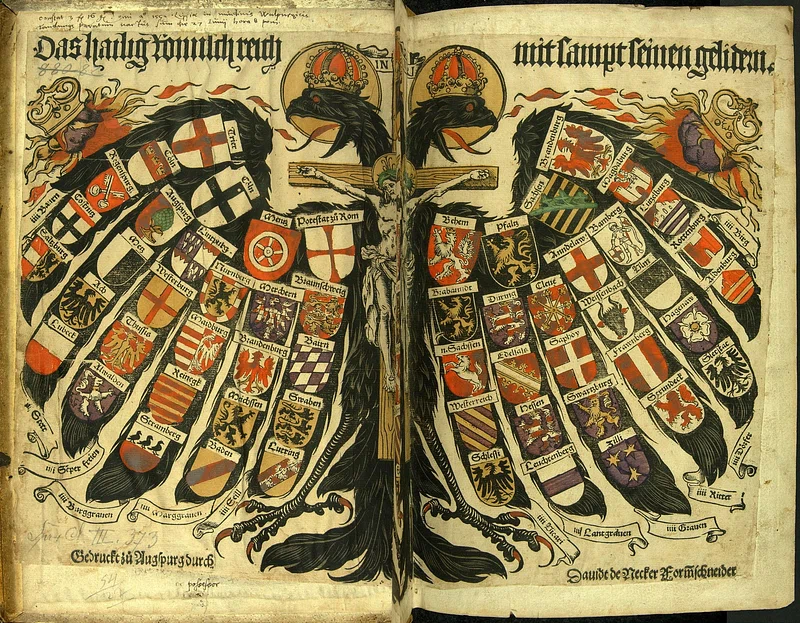

A Glimpse into the Holy Roman Empire
The Holy Roman Empire is often a source of confusion for many people. When we think of empires, we usually envision vast territories ruled by a single sovereign authority. However, the Holy Roman Empire was quite different. Established in 962 when Otto I was crowned Emperor, it was a complex tapestry of various territories in Central Europe that existed for over 800 years. This patchwork of lands included modern-day Germany, Austria, Switzerland, and parts of Italy and France.
Origins and Formation: The Rise of the Empire
The Holy Roman Empire has complex origins that reflect the tumultuous history of medieval Europe. To understand its formation, we need to examine the following key aspects:
The Carolingian Legacy
Charlemagne's Reign (768-814): The foundation of the Holy Roman Empire can be traced back to Charlemagne, King of the Franks, who united much of Western Europe under his rule. Charlemagne was a powerful ruler who expanded his territory through military conquests and established a vast empire that encompassed modern-day France, Germany, and parts of Italy.
Coronation as Emperor: On Christmas Day in 800, Charlemagne was crowned Emperor of the Romans by Pope Leo III in a ceremony held in St. Peter's Basilica. This event symbolized the fusion of Roman, Christian, and Germanic elements, establishing a precedent for the idea of a Christian empire in the West.
Fragmentation After Charlemagne
Treaty of Verdun (843): After Charlemagne's death, his empire was divided among his grandsons through the Treaty of Verdun. This treaty resulted in three distinct kingdoms—West Francia, East Francia, and Middle Francia—leading to political fragmentation and the rise of localized powers.
Decline of Central Authority: The division weakened central authority and led to the emergence of regional rulers, such as dukes and counts, who began to assert their independence. This period marked the beginning of a power struggle between local nobles and the remnants of royal authority.
The Rise of the Ottonian Dynasty
Otto I's Ascendancy (936-973): The turning point for the revival of imperial authority came with Otto I, who became King of Germany in 936 and later crowned himself Emperor in 962. Otto sought to consolidate power by unifying the Germanic tribes and expanding his influence into Italy.
Papal Support: Otto's relationship with the papacy was pivotal in establishing the Holy Roman Empire. By supporting Pope John XII against rival factions, Otto was able to secure the papal crown, which further legitimized his authority as emperor. His coronation in Rome marked the formal establishment of the Holy Roman Empire as a continuation of Charlemagne's legacy.
The Glorious Years of the Holy Roman Empire
Following the formation of the Holy Roman Empire in 962, the subsequent years were pivotal in shaping its political landscape and territorial influence. Initially, the Empire flourished under the Ottonian dynasty, with Otto I laying the groundwork for a centralized authority by unifying various Germanic tribes. His reign marked a renaissance of the imperial idea, positioning the Empire as a powerful force in medieval Europe.
The period following Otto I’s coronation saw significant military campaigns aimed at asserting dominance over Italian territories, as emperors sought to control critical trade routes and exert influence over the Papacy. This ambition often led to conflicts with local Italian states, particularly during the 11th century, when the Empire faced resistance from the emerging city-states in northern Italy.
Empire and Church: The Investiture Conflict
During the late 10th and early 11th centuries, the relationship between the Empire and the Church became increasingly significant. Emperors such as Henry II and Conrad II sought papal support to legitimize their rule, often engaging in reciprocal arrangements that reinforced the authority of both the crown and the Church. However, this alliance was fraught with tension, as the Investiture Controversy emerged in the late 11th century, challenging the Emperor’s right to appoint bishops and leading to significant power struggles between secular and ecclesiastical authorities.
Noble Independence and Cultural Flourishing
Simultaneously, the decentralization of power became more pronounced as regional nobles, or vassals, began to assert their independence, claiming control over vast lands and local governance. This fragmentation of authority resulted in a patchwork of semi-autonomous principalities, duchies, and kingdoms, each vying for influence and autonomy. As a result, the Empire’s central authority began to weaken, leading to conflicts that would persist throughout the Middle Ages.
Despite these challenges, the Holy Roman Empire also experienced a cultural flourishing, as scholars, artists, and theologians thrived under its protective umbrella, promoting advancements in art, architecture, and education. This complex interplay of power dynamics, conflict, and cultural development laid the groundwork for the Empire’s evolution over the centuries, setting the stage for both its internal strife and its enduring legacy in European history.
The Fall of the Holy Roman Empire
The Holy Roman Empire began to decline in the late 17th century, facing numerous challenges that undermined its authority and cohesion. The Thirty Years' War (1618-1648) devastated much of Central Europe, leading to significant territorial losses and weakening central power. By the time of the Napoleonic Wars in the early 19th century, the Empire struggled with internal divisions and external pressures.
The rise of nationalism and the desire for state unification among the various German principalities further eroded the Empire's unity. Ultimately, the formal dissolution of the Holy Roman Empire occurred in 1806, following the abdication of Emperor Francis II in the wake of military defeats by Napoleon, marking the end of an era and paving the way for the formation of modern nation-states in Europe.